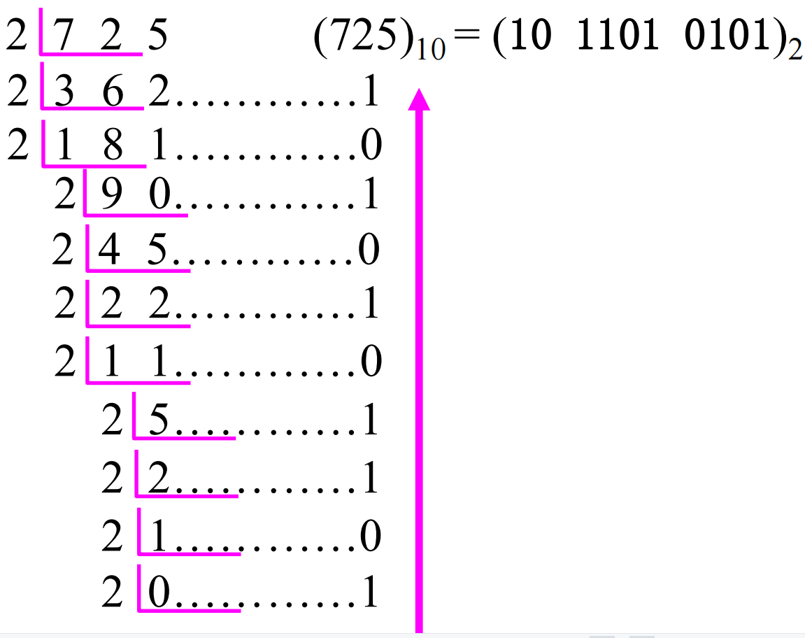
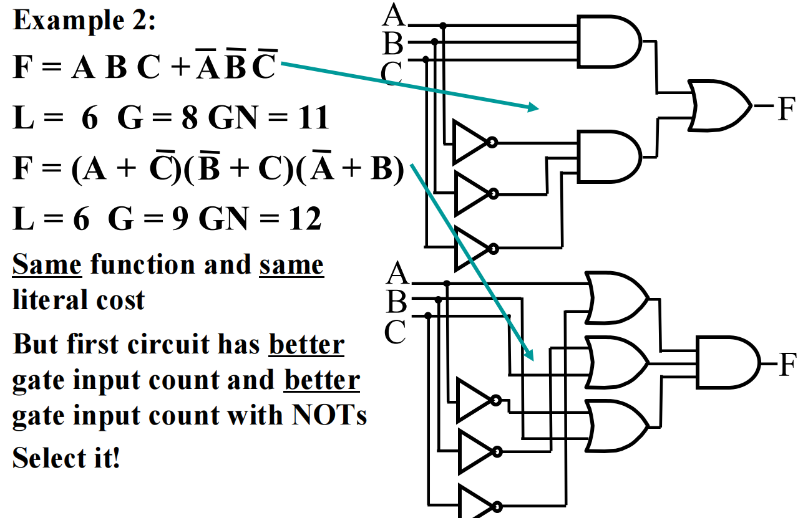
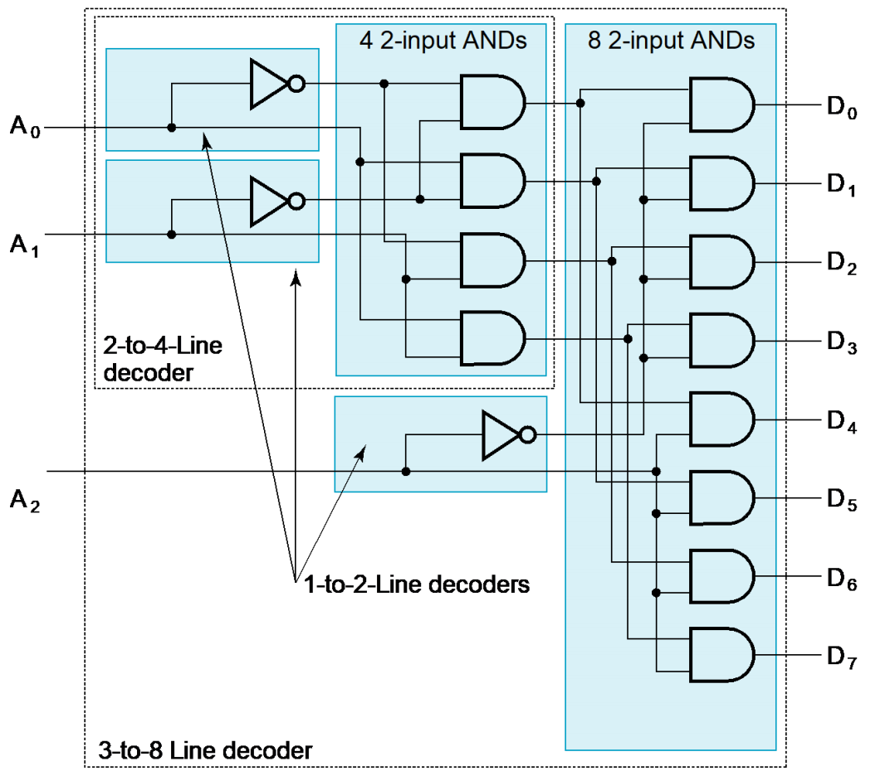
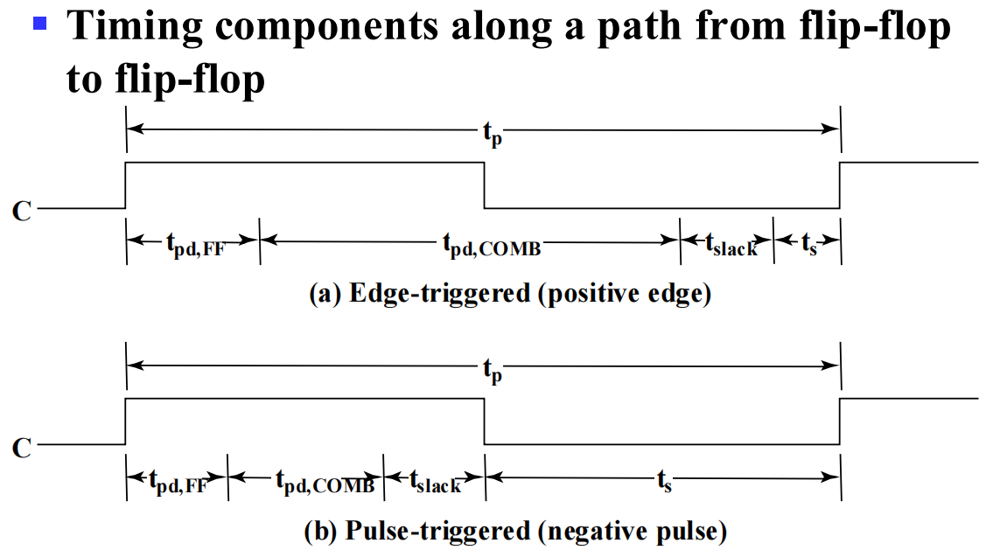

Logic and Computer Design Fundamentals Êï∞Â≠ó‰∏éÈĪËæëËÆæËÆ°¶
约 5813 个字 67 张图片 预计阅读时间 19 分钟
[!TIP]
[!NOTE]
卡诺图、状态图、decoder、encoder
SR，JK filp-flop 是啥
verilog

Digital Systems and Information¶
数字系统与信息
Digital System¶
Digital System: Takes a set of discrete information inputs and discrete internal information (system state) and generates a set of discrete information outputs.
Synchronous Sequential System 同步时序电路：状态在离散的时间点更新
Asynchronous Sequential System 异步时序电路：状态在任何时间点更新
[!NOTE]
现代计算机基本都选择同步！异步的错误率很高
1/主频 = 周期 是规定的更新时间间隔
A Digital Counter 计数器是异步电路
AD 转换：模拟-> 数字
Two level, or binary values are the most prevalent values in digital systems
Number System¶
数字系统表示
二进制补码 = 反码+1，则二进制减法可以用 被减数+减数的补码 来算（最后把溢出的高位舍去）
ËøõÂà∂ËΩ¨Âåñ¶
To convert from one base to another: 1) Convert the Integer Part 2) Convert the Fraction Part 3) Join the two results with a radix point
10-> 2（10进制转2进制）
- 整数部分 除二取余，从下往上得到结果
- 小数部分 乘二取整，从上往下得到结果

2-> 10：\(\sum\) (digit × respective power of 2)
8 <-> 16：通过 2 进制转换
Binary Coded Decimal (BCD)¶
二进制编码的十进制数：The BCD code is the 8,4,2,1 code
BCD Arithmetic

Coding¶
PARITY BIT Error-Detection Codes¶
一种简单的冗余形式是奇偶校验 parity，即在代码字上附加一个额外的位，以使 1 的数量为奇数或偶数。奇偶校验可以检测所有单比特错误和一些多比特错误。
GRAY CODE¶
格雷码：相邻数之间只有一个 bit 不一样

计算方法：错开一位异或可得
Combinational Logic Circuits¶
组合逻辑电路
Gate Circuits and Boolean Equations¶
Binary Logic and Gates¶
二值逻辑和逻辑门
| 英语 | 符号表示 | |
|---|---|---|
| 与 | AND | × 或者 \(\and\) |
| 或 | OR | + 或者 \(\or\) |
| 非 | NOT |        |
真值表 Truth table

MOS Transistor

Switch models
- NO = 0, NC = 1
通用门(Universal Gate)：能够表示其他所有门的逻辑门，NAND 和 NOR 都是通用门
Boolean Algebra¶
The dual 对偶 of an algebraic expression is obtained by interchanging + and · and interchanging 0’s and 1’s.

[!NOTE]
公式（两边取 dual 也成立）

Example

互补函数(Complementing Functions): Use DeMorgan's Theorem to complement a function:
- Interchange AND and OR operators
- Complement each constant value and literal
Example: Complement F = x y z + x y z ； F = (x + y + z)( x + y + z)
一致性定理(Consensus Theorem)：\(XY+\overline{X}Z+YZ=XY+\overline{X}Z+(X+\overline{X})YZ=XY+\overline{X}Z\)
Standard Forms¶
Canonical Forms 标准型
Minterms are AND terms with every variable present in either true or complemented form.
最小项：逻辑值为 1 的乘积项。所有变量都以源变量或者反变量的形式出现，且仅出现一次的乘积项。其特征是在真值表中仅仅表示二进制变量的一个组合，而且对于那种组合其值为 1，对于其他组和其值为 0
- 对于 n 个变量，一共有 2^n^个不同的最小项
- 每个项都要包含所有变量
最大项：Maxterms are OR terms with every variable in true or complemented form.
二变量 X、Y 的 4 个最小项和 4 个最大项

- 最大项和最小项之间是互补(complemented)的关系，即 \(\overline{m_j}=M_j\)
最小项之和(SOM, sum of minterm)
-
If F = m0+m1+m7= \(\sum{m_i}\), then F = M2M3M4M5M6
-
最小项序号 Index：x y z = 101 = 5
- 挑出真值表中所有结果是
1的最小项
最大项之积(POM)
- 挑出所有结果为
0的最大项
Standard Sum-of-Products (SOP)form 积之和 : equations are written as an OR of AND terms
Standard Product-of-Sums (POS) form 和之积 : equations are written as an AND of OR terms

- POS 最外面是乘法，括号里面+连起来的单项不能是两项
[!NOTE]
SOP：化简得
POS：计算反函数（求其非），再用德摩根
Circuit Optimization¶
Two-Level Optimization¶
cost criteria¶
Literal cost (L) 文字成本：the number of literal appearances in a Boolean expression corresponding to the logic circuit diagram
Gate input cost (G)门输入成本：the number of inputs to the gates in thcose implementation corresponding exactly to the given equation or equations.
[!TIP]
门输入成本 = 全部文字数 + 除单个文字之外的全部项数 + 不同取反值的单个文字总数
Gate input cost with NOTs (GN)：把取反也算作操作

Karnaugh Maps (K-map)¶
卡诺图

- 当表示函数最小项的两个方格有相同边缘，这些方格就可以组合到一起形成一个少了一个变量的乘积项
- 对于三变量、四变量的卡诺图，要几何上理解共享边缘
- eg, 4✖4 的 4 个边角可以合并成一个矩形
‰∫åÂèòÈáèÂç°ËØ∫Âõæ¶
‰∏âÂèòÈáèÂç°ËØ∫Âõæ¶
ÂõõÂèòÈáèÂç°ËØ∫Âõæ¶

Four variable maps can have rectangles corresponding to: • A single 1 = 4 variables, (i.e. Minterm) • Two 1s = 3 variables, • Four 1s = 2 variables • Eight 1s = 1 variable, • Sixteen 1s = zero variables (i.e.Constant "1")
目标：
- Find all prime implicants 标 1
- Include all essential prime implicants in the solution 找到最大的矩形覆盖尽可能多的 1
- Select a minimum cost set of non-essential prime implicants to cover all minterms not yet covered
- Minimize the overlap among prime implicants as much as possible. 减少重叠
- 得到的矩形数量就是简化后布尔函数的项数（积之和）
[!NOTE]
合并 1 = 合并 0
最后划分的结果可能不唯一
主蕴涵项（prime）：卡诺图中的 极大 蕴含项
质主蕴含项（又称必要蕴涵项 essential）：质主蕴含项是包含只被它（基本主蕴含项）覆盖的 1 的主蕴含项
对于任意函数，主蕴含项一定存在，但是质主蕴含项不一定存在
无关最小项(don't care condition)：函数中没有指定的最小项，在卡诺图中用“\(×\)”表示
- 包含无关最小项的矩阵划分结果可能不唯一
Multiple-Level Optimization¶
不好用卡诺图
提取公因式降门输入成本

Additional Gates and Circuits¶
Other Gate Types¶
primitive gate: 一次操作 AND, OR + an inversion
complex gate: 不止一次操作
High-Impedance Outputs
Propagation Delay¶
High-to-low (HL) and low-to-high (LH) transitions are defined with respect to the output, not the input. 输出从高-> 低 / 低-> 高
传输延迟（propagation delay）：输出响应输入的变化
惯性延迟（inertial delay）：类似传输延迟，但如果输入变化使输出在一个小于拒绝时间（rejection time）的间隔内发生两次变化，那么两次变化中的第一次将不会发生
传输延迟 tpd= max(tPHL, tPLH)
Exclusive-OR Operator and Gates¶
XOR 异或：复杂门，相同出 0、不同出 1
- \(X ⨁ Y = X \overline{Y} + \overline{X} Y\)
XNOR 同或（异或非）：复杂门，相同出 1、不同出 0
- \(\overline{X ⨁ Y} = XY + \overline{X}\overline{Y}\)

多变量异或运算又被称为奇函数（odd function）
奇函数的反函数称为偶函数（even function）
Combinational Logic Design¶
Implementation Technology and Logic Design¶
Design Procedure¶
Hierarchical Design 分层设计
[!NOTE]
真值表推导出逻辑表达式的步骤：
- 确定输出为 1 的行：对于每个输出信号（如 S0, S1, ..., S5），找出所有 输出为 1 的行
- 写出对应的乘积项：对于每个输出为 1 的行，根据 输入变量（A, B, C）的值写出一个乘积项。如果变量值为 1，则直接写变量；如果为 0，则写变量的非
- 将所有乘积项相加：将这些乘积项用逻辑或（+）连接起来，得到该输出的逻辑表达式
- 可能的化简：使用卡诺图
Combinational Logic¶
宽线
Enable ‰ΩøËÉΩ¶
使能 EN：允许/阻止输入 X 到达输出
Technology mapping¶
工艺映射
Decoder ËØëÁ†Å¶
the conversion of an n-bit input code to an m-bit output code with n ≤ m ≤ 2^n^ such that each valid code word produces a unique output code
译码就是将一个 n 位的输入码转化成一个 m 位的输出码，decoder 出来是最小项
2-4 译码器：
n-m ËØëÁ†ÅÂô®¶

3-8 译码器 = 1 个 2-4 译码器+1 个 1-2 译码器
- 门输入成本 = 3 + 2×4 + 2×8 = 27
1 个 2-4 译码器 = 2 个 1-2 译码器
- 门输入成本 = 2 + 2×4 = 10
如何构造译码器？
- 使 k = n。
- 如果 k 是偶数，则将 k = k/2，并使用 \(2^k\) 个与门，这些门被两个译码器驱动，每个译码器有 \(2^k/2\) 个输出。如果 k 是奇数，计算出(k+1)/2 和(k-1)/2，并使用 2 个与门，这些与门被两个译码器驱动，其中一个译码器有 \(2^{(k+1)/2}\) 个输出，另一个译码器有 \(2^{(k-1)/2}\) 个输出。
- 对于由步骤 2)得到的每一个译码器，使用由步骤 2)得到的 k，重复步骤 2)，直到 k = 1。如果 k = 1，则使用一个 1-2 译码器。
Eg,6-64 译码器：两个 3-8 译码器
门输入成本 = 6+2(2×4)+2(2×8)+2×64 = 182
4-16 译码器？。 = 4+ 2(2×4) + 2×16 =
Decoder with Enable¶
n-m decoder 输出端连接 m 个使能电路（使能信号 EN），能够控制连接
demultiplexer 多路分配器
Âü∫‰∫éËØëÁ†ÅÂô®ÁöÑÁªÑÂêàÁîµË∑ض
combinational logic implementation - Decoder and OR gates
任何 n 输入 m 输出的组合电路都可以用 1 个 n-2^n^译码器和 m 个或门实现
全加器：3 位输入，输出 sum 和进位 carry（3-8 译码器）
Encoder ÁºñÁ†Å¶
2^n^输入，n 输出
优先编码器 priority encoder
- 可以处理多输入，按照优先级依次处理
Selection¶
多路复用器：组合电路从多条输入中选择一个输入，并将信息直接传输到输出
- 逻辑表达式就是最小项：Y = Σm(0,1,2,….) [其中每个最小项对应Ii]
2-to-1-line multiplexer：
- 1 个 1-2 decoder + 两个使能电路 EN + 1 个两输入或门
- \(Y=\overline{S}I_0+SI_1\)（S 是选择输入，I 是输出）
4-to-1-line multiplexer：
- 1 ‰∏™ 2-4 decoder + 4 ‰∏™ ‰∏éÈó® + 1 ‰∏™ÂõõËæìÂÖ•ÊàñÈó®Ôºà1 ‰∏™ 4×2 ‰∏éÊàñÈó®Ôºâ → cost = 2 + 2(4×2)+ 4 = 22
- \(Y=\overline{S_1}\overline{S_0}I_0+\overline{S_1}{S_0}I_1+S_1\overline{S_0}I_2+S_1S_0I_3\)
64-to-1-line multiplexer：1 ‰∏™ 6-64 ËØëÁ†ÅÂô®+1 ‰∏™ 64×2 Áöщ∏éÊàñÈó® → cost = 182 + 128 + 64 = 374

若有 n 个变量，找到 Truth tables 的最小项，
BCD 码转化为 7 段码的译码器，用 8-1 多路复用器
Arithmetic Functions¶
Iterative Combinational circuits Ëø≠‰ª£ÁªÑÂêàÁîµË∑ض
数字 \(A_nA_{n-1}...A_1A_0\) + \(B_nB_{n-1}...B_1B_0\)
Adder Âä†Ê≥ïÂô®¶
ÂçäÂä†Âô®Ôºà‰∏§‰∏™ËæìÂÖ•„Äʼn∏§‰∏™ËæìÂá∫Ôºâ¶
\(S=X\oplus Y\)
\(C=XY\)
半加器由一个异或门，一个与门组成，两位二进制加法

ÂÖ®Âä†Âô®Ôºà‰∏â‰∏™ËæìÂÖ•„Äʼn∏§‰∏™ËæìÂá∫Ôºâ¶
\(S = X\oplus Y\oplus Z = \overline{XY}Z+ \overline{X}Y\overline{Z} + X\overline{YZ} + XYZ\)
\(C = XY+ (X\oplus Y)Z = XY + XZ + YZ\)
\(X·Y\) is carry generate(G), \(X\oplus Y\) is carry propagate(P)
全加器由两个半加器 + 一个或门组成，三位二进制加法
Carry Lookahead Adder¶
C4 = G3 + P3G2 + P3P2G1+ P3P2P1G0 + P3P2P1P0 C0 = G0~3+ P0~3C0
行波进位加法器 ripple carry adder
延迟

Subtracter ÂáèÊ≥ï¶
对于 n < 0, 2's complement 补码 = 反码（对除了符号位取反）+1
对于 n > 0, 补码 = 反码 = 源码
补码再求一次补码就是源码
Overflow¶
overflow 检查符号位，和第一个操作数一致则没有溢出
用 V 表示溢出
Extension
ALU ÂÖ®Âä†Âô®¶
\(S_i = A_i\oplus B_i\oplus C_i\)
Sequential Circuits¶
时序电路
组合电路是时序电路的一部分
Storage Elements and Sequential Circuit Analysis¶
Introduction¶
存储组合电路的状态 state
next state = f(input, state)
outputs(Mealy 米利模型) = g(inputs, state) 显示表达 inputs，即使 state 不变， inputs 变化就会变化
outputs(Moore 摩尔模型)= h(state) 隐含 inputs，只有状态变化才输出变化
- 计算机大多采用 Moore 形式
同步时序电路 synchronous：离散时间点，时钟锁定
异步时序电路 asynchronous：即时变化，如果时钟也作为输入的一部分，就是异步
types¶
gate delay
- transition time：从打算输出到最终输出的时间
- propagation delay：输入到输出端到端的延迟

Glitch 的形成原因：非门的延迟 propagation delay of the inverter (NOT gate)
Here's a breakdown of why:
Multiplexer Function: The circuit is designed so that when the select signal S is 1, Y = A, and when S is 0, Y = B.
Signal Transition: The glitch happens when the select signal S transitions from 1 to 0. At this specific moment in the timing diagram, both inputs A and B are high (1).
Ideal vs. Real Behavior: Ideally, when S changes from 1 to 0, the output Y should switch from following A to following B. Since both A and B are high, Y should remain high.
Inverter Delay: However, the inverter which generates Sˉ (the inverted version of S) has a delay (indicated as 0.2 time units in the diagram).
Race Condition:
When S goes from 1 to 0:
- The signal S = 0 arrives quickly at the input of the top AND gate, disabling it.
- The signal Sˉ remains 0 for a short time (0.2 units) due to the inverter's delay before it becomes 1.
- During this short delay period, both S and Sˉ are effectively 0 at the inputs of their respective AND gates.
Output Drops: With both AND gates receiving a 0 on their select inputs (S = 0 for the top, Sˉ = 0 temporarily for the bottom), both AND gates output 0.
Glitch Formation: Since both inputs to the final OR gate are 0, its output Y drops to 0. This creates the brief low pulse, known as a glitch.
Recovery: Once the inverter delay passes, Sˉ becomes 1, enabling the bottom AND gate. Since B is 1, the bottom AND gate outputs 1, and the OR gate output Y goes back to 1.
In summary, the delay in the inverter causes a brief period where neither input A nor B is selected, leading to the temporary incorrect low output (the glitch).
震荡电路 oscillator，不稳定 unstable
Storage elements¶
Latches ÈîÅÂ≠òÂô®¶
锁存器是构造触发器的基本元件；只要输入信号不变化，保持输出不变，即锁存器是透明的
Triggers 触发器可以当锁存器用，反之不行
SR 和 \(\overline{S}\overline{R}\) 锁存器
SR ‰ΩéÊúâÊïà(NAND)¶
两个交叉耦合的 与非门 NAND

输出 Q = 1 且 \(\overline{Q}\) = 0，置位状态 set state
输出 Q = 0 且 \(\overline{Q}\) = 1，复位状态 reset state
两个输入 S = R = 0，输出 = 1，禁止
两个输入 S = R = 1，输出 = 0，未定义状态
SR È´òÊúâÊïà(NOR)¶
两个交叉耦合的 或非门 NOR

输入 S = 1/0，R = 0，输出 Q = 1 且 \(\overline{Q}\) = 0，置位状态 set state
输入 S = 0，R = 0/1，输出 Q = 0 且 \(\overline{Q}\) = 1，复位状态 reset state
两个输入 S = R = 0，输出 = 1，未定义状态
Èó®ÊéßÂà∂ Clocked S - R Latch¶
增加时钟控制锁存器何时对输入敏感
- 不能称之为触发器，不满足触发器要求
D Latch¶
D 锁存器：确保输入输入信号永远不会同时取 1 以消除未定义状态，只有两个输入 D（数据信号）和 C（控制信号）
- 从 SRC 锁存器转化而来，强制要求 \(S=\overline{R}\)
- 只有当 C 为
1时，D 锁存器才能写入数据；而当 C 为0时，D 锁存器的数据就不会变化 - 锁存器是透明的（transparent），因为当控制输入端位 1 时，从输出端可以看到数据输入端的值
Ë߶ÂèëÂô® Flip-flop¶
触发器是一个能够储存 1 位信息的二进制储存元件，在最简单的时钟控制的时序电路中使用
- 触发现象（trigger）：触发器中，输入信号值的改变可以控制内部锁存器的状态
- 触发器消除了透明性，在输出信号改变之前，输入信号和输出信号之间的通路被断开；触发器的状态只取决于前面一个瞬间的状态，不会发生多次状态改变的现象
S-R Master-Slave ‰∏ª‰ªéË߶ÂèëÂô®¶
edge-triggered ËæπÊ≤øË߶ÂèëÂô®¶
边沿触发器（D 触发器）只在时钟信号跳变时触发（忽略保持阶段的时钟脉冲）
正边沿（0-> 1），负边沿（1-> 0）
- 正边沿多一个反相器
标准图形符号
、
直接输入：在加载时钟前，将数字系统中的触发器设置成初始状态
Difference between Latches and Flip-flops¶
Sequential circuit analysis¶
State Diagrams Áä∂ÊÄÅÂõæ¶
状态等价：Two states are equivalent if their response for each possible input sequence is an identical output sequence.
Alternatively, two states are equivalent if their outputs produced for each input symbol is identical and their next states for each input symbol are the same or equivalent.
弧线上是输入/输出，如果输出在里面（moore 模型），说明输入不会改变输出的值
Moore and Mealy Models¶
Moore Model 摩尔模型
- Named after E.F. Moore
- Outputs are a function ONLY of states
- Usually specified on the states 输出仅依赖于状态
Mealy Model 米利模型
- Named after G. Mealy
- Outputs are a function of inputs AND states
- Usually specified on the state transition arcs 依赖于状态和输出条件（转换条件）

State tables Áä∂ÊÄÅË°®¶
当前状态、输入、下一状态、输出
一个包含 m 个触发器和 n 个输入的时序电路的状态表有 \(2^{m+n}\) 行
Sequential Circuit Design¶
- Finding a State Diagram
- Convert it to a state table
Áä∂ÊÄÅÁÆÄÂåñ¶
状态简化：获得一个最小化的状态表。这个表不仅能正确地反映设计的全部要求，而且状态的数目最少
状态等效（equivalent）：状态 S1 和 S2 是完全确定状态表中的两个状态，对于所有可能的输入序列，输出响应序列完全相同
- 或次态相同 或次态交错 或次态循环
完全确定状态表： 状态表中的次态和输出都有确定的状态和确定的输出值
ÈöêÂê´Ë°®ÂåñÁÆĶ
Sequential Circuit Timing¶
a) 主从触发器：\(传播延迟>t_{hold}\)，\(t_{setup}=t_w\)
b) 边缘触发器（负）：\(t_{setup}<t_w\)
\(t_s\) - setup time 触发器建立时间，输入保持一段时间不变 - minimum time for which the S and R or D inputs must be maintained at a constant value prior to the occurrence of the clock transition that causes the output to change
- Master-slave - Equal to the width of the triggering pulse
- Edge-triggered - Equal to a time interval that is generally much less than the width of the the triggering pulse
\(t_h\) - hold time 在输出改变后保持一段时间- Often equal to zero \(t_{px}\) - propagation delay 传播延迟，时钟触发沿与输出稳定为一个值之间的时间间隔
- Same parameters as for gates except
- Measured from clock edge that triggers the output change to the output change
\(t_{pd,FF}\) - 触发器延迟
\(t_{pd,COMB}\) - 组合逻辑电路总延迟时间（触发器输入-输出）
\(t_{slack}\) - 松弛时间 - extra time in the clock period in addition to the sum of the delays and setup time on a path ≥0
\(t_p\)(clock period = 1/clock frequency)是所有这些时间之和 ≥ max(\(t_{pd,FF}\) + \(t_{pd,COMB}\) + \(t_s\))
If the clock period is too short, some data changes will not propagate through the circuit to flip-flop inputs before the setup time interval begins

计算可允许的 \(t_{pd,COMB}\)：主从触发器可允许的 gates 要少于边缘触发器
Digital Hardware Implementation¶
The Design Space¶
Programmable Implementation Technologies¶
可编程实现技术
Read Only Memories (ROM): Fixed AND array and programmbale ORs
- PROM have: N input lines, M output lines, and 2^N^ decoded minterms
Programmable Array Logic (PAL) 与项可编程: The PAL is the opposite of the ROM, having a programmable set of ANDs combined with fixed ORs
Programmable Logic Array (PLA): Compared to a ROM and a PAL, a PLA is the most flexible having a programmable set of ANDs combined with a programmable set of ORs.
| AND | OR | DEVICE |
|---|---|---|
| Fixed | Fixed | not programmable |
| Fixed | Programmable | PROM |
| Programmable | Fixed | PAL |
| Programmable | Programmable | PLA |
Register and Register Transfers¶
Register, Microoperations and Implementations¶
Register¶
ÂØÑÂ≠òÂô®¶
- (a) 由四个 D 触发器构成的寄存器，输入 \(\overline{clear}\) 必须是 0 才能触发异步复位
- (b) 寄存器符号表示，clear 外的圆圈表示：输入该信号加载逻辑 0，触发清零操作
- Load-Controlled Feedback 寄存器载入/保持（loading）
- load = 0, hold current values 保持
- load = 1, load input values 传输
Âπ∂Ë°åÂä†ËΩΩÂØÑÂ≠òÂô®¶
clock gating 门控时钟
- \(C_{input} = \overline{load}+clock\)
- load = 1，\(C_{input}=clock\)，新数据再时钟上升沿传输至寄存器
- load = 0，\(C_{input}=1\)，寄存器内容不变
- load =0，C=X，load D
ÂØÑÂ≠òÂô®‰º†Ëæì¶
微操作(microoperation)：对寄存器存储数据执行的基本操作
寄存器传输语言(Register Transfer Language, RTL)
寄存器类型：地址寄存器（AR）、程序计数器（PC）、指令寄存器（IR）、R2（寄存器 2）
\(if(K1=1)then(R2←R1)\) 可以写为 \(K1: R2←R1\)
微操作类型：算术微操作、传输微操作、逻辑微操作、移位微操作
Counter, Register cells, Buses & Serial operations¶
ÂØπÂçï‰∏™ÂØÑÂ≠òÂô®ÁöÑÂæÆÊìç‰Ωú¶
基于多路复用器的传输
3-1 多路复用器实际上用的是 4-1（1 个位弃用）
有总线的多路复用器多寄存器传输相比只用多路复用器更加便宜（gate input cost 低）
three-state bus 三态总线
Áߪ‰ΩçÂØÑÂ≠òÂô®¶
移位寄存器 shift register
带有 并行加载 功能的移位寄存器
- \(Shift\): Q ⬅ sl Q，移位
- \(\overline{Shift} · Load\): Q ⬅ D，并行载入
- \(\overline{Shift} · \overline{Load}\): Q ⬅ Q，保持
双向移位寄存器(bidirectional shift register)
-
每一级由一个 D 触发器和一个 4-1 多路复用器构成
-
S0 S1 寄存器操作 0 0 保持不变 0 1 左移 1 0 右移 1 1 并行加载到 D 触发器
Counter¶
计数器：能够在输入脉冲序列的激励下便利指定状态序列的寄存器
一个 n 位的二进制计数器由 n 个触发器构成，计数范围为 0~2^n^-1
Ripple Counter Ë°åÊ≥¢ËÆ°Êï∞Âô®¶
行波计数器：加载到某些触发器 C 输入端的值不是公用的时钟脉冲，而是其他触发器的输出信号
- 每次 \(Q_n\) 发生从 1 到 0 的跳变 将使 \(Q_{n+1}\) 发生翻转
- 行波计数器硬件简单，但是是异步时序电路，时延大时很不稳定
Synchornous Counter ÂêåÊ≠•ËÆ°Êï∞Âô®¶
同步计数器：所有触发口 C 输入端口都加载公用的时钟信号
4 位二进制同步计数器
并行计数器从状态 1111 到状态 0000 的转变只需要一个与门的时延，二串行计数器需要 4 个
- EN 为计数器使能输入信号
- 当 EN = 1，计数器可以正常向上或向下计数
- 当 EN = 0，计数器不执行计数操作
ÂÖ∂‰ªñËÆ°Êï∞Âô®¶
并行加载功能的 4 位二进制计数器

同步 BCD 计数器（无加载功能）
任意计数序列的计数器？
- 状态表（当前-下一状态）
- 得到简化的方程：\(D_A=?\)
- 画逻辑图
ÂØÑÂ≠òÂô®ÂçïÂÖÉËÆæËÆ°¶
Serial Adder 串行加法器
Control of Register Transfers¶
Memory Basics¶
Definition¶
Block Diagram of Memory
- k address lines are decoded to address 2^k^ words of memory.
- Each word is n bits.
- Read and Write are single control lines defining the simplest of memory operations.
总共 k（\(k＞log_2{\text{储存器字数}}\)） 个地址线，n 个输入输出线
RAM¶
Random Access Memory (RAM) 随机访问内存
- 读操作：将目标二进制地址加载到地址线；存入的数据信息加载到数据输入线；激活输入信号
- 写操作：将目标二进制地址加载到地址线；激活输入信号
内存大小 12bit to 4096 12bit = 12×4096/8 = 6k
静态 RAM(SRAM)由储存二进制信息的内部锁存器构成，信息会一直被存储直到断电
动态 RAM(DRAM)以电荷电容的形式存储信息，易于使用，读写周期短，且不需要刷新
SRAM¶
SRAM cell
- SR 锁存器
- Select 为输入使能控制
- Select = 0，内容保持不变；\(C\) 和 \(\overline{C}\) 都为 0
- Select = 1，内容由 \(B\) 和 \(\overline{B}\) 的值决定；C 为储存值
为了修改已储存的值，\(Read/\overline{Write}\) must be 0 and \(\text{Bit Select}\) must be 1
Decoder － decodes the n address lines to 2^n^ word select lines
Coincident Selection 重合选择：用两个 decoder，分别负责横向和纵向的寻址
- Word select becomes Row select
- Bit select becomes Column select
RAM 芯片中的译码器：具有 k 个输入和 2^k^个输出，需要 2^k^个具有 k 个输入的与门
DRAM¶
扩展内存
- 字扩展（扩展 word 的数量）：将多个 RAM “并联”，并相应地扩展地址的位宽；
- 位扩展（扩展 word 的位宽）：将多个 RAM “串联”，并相应地扩展输入输出的位宽；
Address multiplexing 地址复用
Coincident selection 重合选择
评论区~
有用的话请给我个赞和 star =>